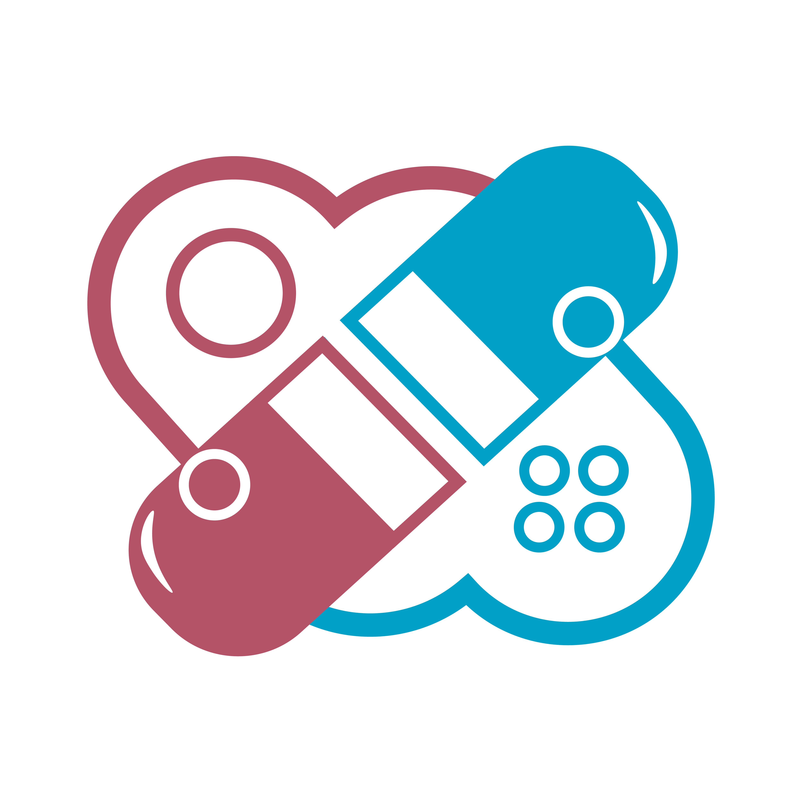

<ion-app>
    <ion-menu contentId="main-content" type="overlay">
      <ion-content>
        <ion-list id="inbox-list">
          <!-- <ion-list-header>LOGO</ion-list-header> -->
          <div class="image-group">
            
            <ion-note>REMEDIO</ion-note>
          </div>

          <ion-menu-toggle auto-hide="false">
            <ion-item routerDirection="root" [routerLink]="['client/index']" lines="none" detail="false" routerLinkActive="selected">
              <ion-icon aria-hidden="true" slot="start" name="home"></ion-icon>
              <ion-label>Tasks</ion-label>
            </ion-item>
            <ion-item routerDirection="root" [routerLink]="['client/addreminder']" lines="none" detail="false" routerLinkActive="selected">
              <ion-icon aria-hidden="true" slot="start" name="alarm"></ion-icon>
              <ion-label>Reminders</ion-label>
            </ion-item>
            <ion-item routerDirection="root" [routerLink]="['client/addguardian']" lines="none" detail="false" routerLinkActive="selected">
              <ion-icon aria-hidden="true" slot="start" name="people"></ion-icon>
              <ion-label>Guardians</ion-label>
            </ion-item>
            <ion-item routerDirection="root" [routerLink]="['client/badges']" lines="none" detail="false" routerLinkActive="selected">
              <ion-icon aria-hidden="true" slot="start" name="barbell"></ion-icon>
              <ion-label>Badges</ion-label>
            </ion-item>
            <ion-item routerDirection="root" [routerLink]="['client/plant']" lines="none" detail="false" routerLinkActive="selected">
              <ion-icon aria-hidden="true" slot="start" name="leaf"></ion-icon>
              <ion-label>Virtual Plant</ion-label>
            </ion-item>
          </ion-menu-toggle>
        </ion-list>
      </ion-content>
    </ion-menu>
    <ion-router-outlet id="main-content"></ion-router-outlet>
</ion-app>
